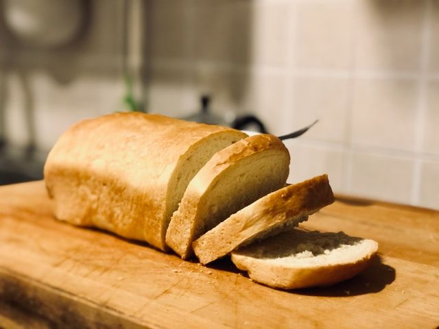

Pain blanc à la machine à pain
Préparation: 5 minutes
Cuisson: 26 minutes
Total: 2 heures
Ingrédients
-
1.5 c. à thé de levure sèche active

-
3 1/2 t de farine
-
2 c. à soupe de sucre
-
2 c. à soupe de huile
-
1.5 t d'eau tiède
-
1 c. à thé de sel
Instructions
Une machine à pain est utile pour sauver du temps. Par contre, la cuisson y est parfois décevante. Je suggère d’utiliser l’appareil en mode pétrissage, puis de cuire la pâte au four
Dans le contenant de la machine à pain, ajouter un peu de farine, la levure, puis le reste de la farine pour protéger la levure du sel
- 1.5 c. à thé de levure sèche active
- 3 1/2 t de farine
Ajouter les autres ingrédients
- 2 c. à soupe de sucre
- 2 c. à soupe de huile
- 1.5 t d'eau tiède
- 1 c. à thé de sel
Démarrer la machine au mode pétrissage ou la programmer avec un minuteur pour une période future.
Façonner la pâte selon la forme désirée (ex miche ou petits pains). Déposer sur une plaque recouverte d’un tapis de cuisson en silicone. Cuire au four préchauffé à 180 °C (350 °F) pendant 26 minutes.
Notes
Si la levure est vielle et vous n'êtes pas certain si elle est encore bonne, vous pouvez la tester avant de risquer de rater un pain entier. Ajouter le sucre et levure à 1/2 t d'eau tiède. Si la levure est encore efficace, elle devrait réagir et former des petites bulles. Utiliser le mélange comme à la place de la levure normale dans la recette. N'oubliez pas de mettre 1/2 t d'eau tiède de moins!
Le sel peut tuer la levure. Il est primordial que ces ingrédients ne soient pas en contact direct. Ainsi, je recommande de faire un petit nid dans la farine pour la levure.
Le plus important pour s'assurer que le pain lève est la température de l'eau. Elle doit être à peu près à la température du corps humain. Pas trop chaud, ni trop froid.